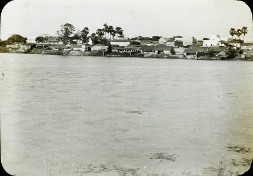
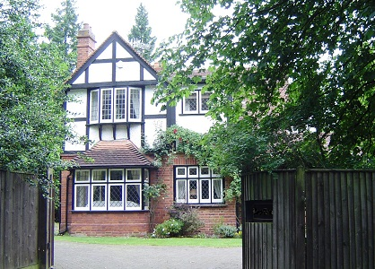
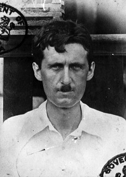
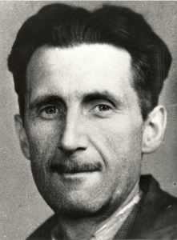
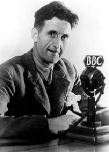
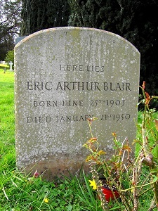
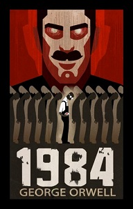

Eric Arthur Blair, mais conhecido pelo seu pseudônimo George Orwell, foi um escritor, jornalista e ensaísta inglês que influencia a opinião pública até hoje, sua obra é focada em discussões políticas e distopias, sendo muito usado nas discussões sobre governos. A influência de suas ideais gerou o termo Orwelliano, que é o adjetivo usado para governos que espiam em sua população, termo criado em homenagem ao governo antagonista de sua principal obra, 1984. Sua vida e obra será detalhada na linha do tempo a seguir
1903 | Nascimento
George nasceu em 25 de junho de 1903 em Motihari na colônia de Bengala no domínio da Índia Britânica, atualmente o estado de Bihar na Índia, era descendente de uma família rica e com linhagens nobres, mas que com o tempo perdeu seu prestígio e fortuna, se encontrando na classe média, seu pai era um oficial do governo imperial britânico no Departamento de Ópio do Serviço Civil Indiano. Com um ano de idade se mudou para Inglaterra junto à mãe, mais especificamente para a cidade Henley-on-Thames, onde viveu com duas irmãs e sua mãe, quase sem contato com o pai ao longo da vida.
1904 - 1921 | Infância e formação
George foi criado em um ambiente muito social e artisticamente envolvido, sem passar por grandes problemas financeiros ou qualquer crise. Em sua infância tinha o sonho de ser um escritor famoso, plano que dividia com uma amiga chamada Jacinta Buddicom, plano que ambos conseguiram realizar. Com cinco anos de idade passou a frequentar um internato de freiras católicas, que era a única escola que a família tinha a capacidade de bancar. Devido a conexões que sua família tinha, conseguiu uma bolsa de estudos para a Escola de São Cipriano, que foi uma experiência que Orwell achou tão desagrádavel que dedicou um ensaio às suas experiências negativas lá. Em sua estadia na escola teve seus primeiros poemas publicados. Saiu do colégio em 1916 e foi para o Eton College, um colégio renomado, devido a uma bolsa que conseguiu devido a uma competição, teve notas baixas no colégio e terminou seus estudos em 1921. Devido a sua baixa performance acadêmica não conseguiu uma bolsa de estudos, logo decidiu virar um policial nas colônias do império.
1922 - 1927 | Polícia Colonial
Devido a possuir família no local ganhou posição no território que hoje é o Myanmar, teve uma carreira bem sucedida, avançando pela hierarquia da polícia, no entanto em 1927 teve um caso de dengue, devido a isso foi autorizado a antecipar suas férias e se recuperar na Inglaterra, nesse período reavaliou a sua vida e decidiu demitir-se. Suas experiências no local o levaram a escrever o romance “Dias na Birmânia'' (1934), onde critica as ações do governo britânico, e os ensaios "A Hanging" (1931) e "Shooting an Elephant" (1936).
1928 - 1936 | Vida como escritor mal sucedido
De volta a Inglaterra começou a se dedicar a literatura, visitando amigos e profissionais e foi capaz de obter dicas de como escrever e além disso moradia, assim podendo manter uma vida estável. Nesse período começou a frequentar e morar em partes empobrecidas de Londres, para entender como a população vivia, experiência que recordou no livro “Na Pior em Paris e Londres” (1933).
Em 1928 mudou-se para Paris devido ao custo menor de vida e ao fácil acesso à boêmia, lá era ajudado pela tia a se sustentar. Nesse período pode escrever alguns livros, mas principalmente trabalhou como jornalista. Em março de 1929 teve uma doença grave, e logo após isso teve todo seu dinheiro roubado em um assalto a sua casa, nesse período teve de começar a trabalhar como lavador de pratos.
Após o incidente voltou à Inglaterra, voltando a morar na casa de parentes, permaneceu assim pelos próximos 5 anos, nesse período estabeleceu conexão com antigos amigos. Trabalhou como professor em uma pequena escola e continuou a frequentar bairros pobres, dedicando muitos de seus trabalhos às situações dos locais. No já citado “Na Pior em Paris e Londres”, onde detalha suas experiências em regiões pobres das duas cidades, ele passa a escrever sobre o pseudônimo de George Orwell com o objetivo de não envergonhar sua família com suas histórias. Apesar da vergonha que tinha em relação ao livro ele vendeu bem, no mesmo período começou a dar aulas em uma escola maior que a anterior.
Em 1935 se mudou para outro bairro de Londres, onde arrumou emprego em uma livraria, nesse período em uma festa conheceu a sua futura esposa Eileen O'Shaughnessy. Ao final deste ano teve dificuldade de pagar seu aluguel e se mudou no início de 1936 ao norte do país, nesse mesmo período passou a frequentar reuniões do Partido Comunista. Voltou a Londres após isso e publicou “A Caminho de Wigan”, detalhando a pobreza da região que havia visitado, além de desenvolver seus pensamentos, agora alinhados ao socialismo, devido a isso começou a ser vigiado pelo governo.
1937 - 1945 | Guerras
Em 1937 com a erupção da Guerra Civil Espanhola se voluntariou ao combate, lutando contra o governo fascista de Francisco Franco junto a esposa. Foi ferido no pescoço em meio ao combate visto que sua elevada altura (1,88m) o tornava um alvo fácil, a bala danificou suas cordas vocais, limitando sua capacidade de fala e foi declarado como inválido para o serviço e eventualmente voltando para casa, um ano depois escreveu “Lutando na Espanha”, relatando suas experiências na guerra. Em 1939 o governo de Franco ganhou a guerra.
Em 1938 teve de ser internado em um sanatório devido a um caso de tuberculose, devido ao mesmo teve seu alistamento rejeitado como soldado para a Segunda Guerra Mundial em 1939. Durante a guerra, de 1941 a 1943, trabalhou na BBC, apesar disso não há registro de suas ações lá. Em 1943 tornou-se editor do jornal “The Tribune”. Detalhou em seus trabalhos literários menores do período o desgosto pela aliança britânica ao autoritário líder soviético Josef Stalin.
1945 - 1950 | Do sucesso a morte
Ele e a esposa adotaram um garoto nesse mesmo ano, porém em 1945 ela viria a falecer em meio a uma cirurgia. Ao fim deste ano o autor publica “A Revolução dos Bichos”, uma alegoria , o conto era uma alegoria à Revolução Russa e teve dificuldade em ser lançado devido às críticas ao totalitarismo de Stalin, um aliado na atual guerra, mas quando lançado o livro se tornou um sucesso imediato, vendendo 250 mil cópias em um ano.
Após a guerra mudou-se para um sítio isolado na Escócia, onde escreveu a maior parte de 1984, a sua mais famosa obra que será discutida mais a fundo posteriormente, que foi publicada em 1949. Porém antes disso, no final de 1946, voltou a Londres, agora um escritor famoso teve inúmeras ofertas de emprego, porém seu tempo na cidade não foi agradável, teve de passar por um dos invernos mais fortes que o local já experienciou, que devido ao estado de pobreza da cidade em geral não havia aquecedores, acabou por queimar a mobília de sua casa para não congelar, algo que junto a forte presença de fumaça na cidade causou dano a sua saúde.
Voltou para o seu sítio em abril de 1947, lá voltou a trabalhar no já citado livro 1984, mas em um passeio desastroso a barco ele quase se afogou. Em dezembro o autor foi diagnosticado com outro caso de tuberculose em uma visita a Glasgow na Escócia, permaneceu lá metade do ano de 1948 devido ao tratamento. Em condição muito frágil voltou a seu sítio, onde terminou o livro em dezembro de 1948 e o teve publicado 7 meses após isso. O livro foi imediatamente um enorme sucesso, sua saúde estava extremamente debilitada, acabou se casando novamente na metade de 1949, com Sonia Browell, algo que não aproveitou por muito tempo, em 21 de janeiro de 1950 uma artéria de seu pulmão rompeu, causando sua morte aos 46 anos.
1984 (livro)
A obra foi escolhida em primeiro lugar por ser seu mais famoso trabalho, mas também o seu mais influente na cultura popular. 1984 trata de um governo distópico na Inglaterra em 1984, controlado pela Oceania, um império multicontinental, que vai a distâncias absurdas para evitar qualquer chance de oposição ao seu governo, remodelando a língua do país (A novilíngua foi criada para ser o mais simples possível, assim impedindo que cidadãos formem pensamentos complexos), criando enorme doutrinação nas escolas, a propaganda política é constantemente mostrada a população, e mais importante na situação, a população é constantemente vigiada pelo partido que controla esse governo. Tal partido segue o IngSoc, Socialismo Inglês, ideologia que se opõe a tudo que o socialismo defende mas ainda sim se apropria de seu nome, visto seus viés extremamente autoritário e divisão das classes sociais, uma crítica ao nacional socialismo (nazismo) e stalinismo.
As alegorias aos líderes totalitários não param por aí, o líder de tal partido é o Grande Irmão (Big Brother na língua original, e sim, o reality show tem o nome inspirado nesse personagem), tal personagem é uma figura quase mitológica, que apesar de ser o líder original do movimento, ninguém mais sabe sequer quem ele é, apenas que ele está observando, o “opositor” principal dele seria Emmanuel Goldstein, um ex-membro do partido, que denunciaria os crimes cometidos por ele e explica porque a situação para a população em geral é tão horrível, o personagem é uma alegoria a Leon Trotsky, Bolchevique na Revolução Russa, que se tornou o principal opositor de Stalin. Escolhi descrever Goldstein entre aspas visto que tal como o Grande Irmão a sua existência não é confirmada, geralmente sendo somente usado na propaganda governamental como um grande risco a população, que deveria se juntar ao grande irmão para combatê-lo.
Nesse mundo vive Winston Smith, um membro irrelevante no partido que tem uma vida miserável, tendo um emprego e uma esposa que odeia, gradualmente vai descobrindo a verdade do mundo que vive, sobre como o partido controla a população e como era a vida antes dele tomar o poder, nesse processo começa uma relação com Julia, uma outra opositora do partido. Ao final da obra sua mini-revolução dá errado, são descobertos pelo partido, na verdade ele sabia desde o início de seus planos, e são mandados a serem torturados na sala 101, lá acabam tendo seu espírito, onde Winston para evitar a continuação de sua tortura manda seu sofrimento a Júlia. Ao final da obra ela revela ter feito o mesmo a ele, ambos se sentem incapazes de estarem juntos, deixando Winston com apenas o Grande Irmão presente em sua vida.
Apesar da história deprimente do livro, ela não é o ponto principal que o público lembra, mas sim o cenário em que se passa a obra, envolvendo a repressão governamental e a vigilância da população. No mundo anglófono a obra é extremamente importante e influenciou sua realidade de diversas maneiras, seja no aspecto da linguagem, onde termos da novilíngua foram apropriados ao vocabulário normal, principalmente o termo crimideia (thoughtcrime) e a Polícia do Pensamento, que são respectivamente um pensamento criminoso e quem pune e monitora eles, os termos são usados para ironizar os defensores da censura. Porém o impacto cultural de maior relevância do livro ocorreu em 2013 com o caso Snowden, tal caso revelou que o governo americano estava espionando seus cidadãos e cidadãos de outros países, caso com enorme similaridade a 1984.
